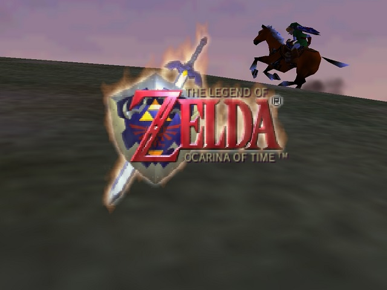
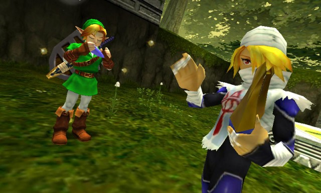

The Legend of Zelda: Ocarina of Time

The Legend of Zelda: Ocarina of Time follows a young boy
named Link who is sent on a quest to help Princess Zelda after
being told about a grave danger threatening his land of Hyrule. Link must
go on an adventure across Hyrule and time to stop Ganondorf and save the Kingdom!
Publishing Info
- Published by: Nintendo Co.
- Developed by: Nintendo EAD
- Released: 1998 on Nintendo 64

Additional Info
- Genre: Action
- Perspective: 1st person, Behind view
- Gameplay: 3D exploration, puzzle solving
- ESRB Rating: Everyone
Quote
"The Legend of Zelda: Ocarina of Time should be recommended playing
for ever aspiring videogame designer and programmer out there. If you're
making games and you haven't played this game, then you're like a director
who has never seen Citizen Kane or a musician who has never heard of Mozart." -IGN